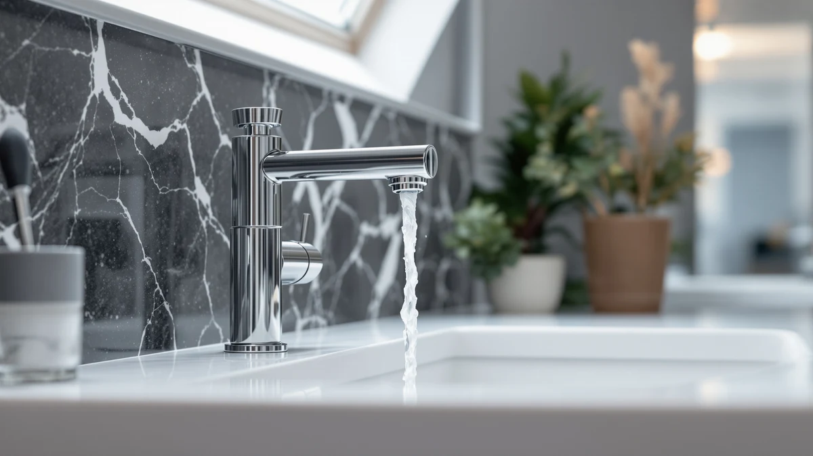

Best Bathroom Faucet With Sprayer of 2026: 7 Top Picks
Prices and picks verified as of August 2026. Independent, reader-supported reviews.


Quick Answer
The Delta Arvo in brushed nickel at $150.38 is the best bathroom faucet with sprayer for most bathrooms. Its pull-down wand rinses the whole basin and the brushed nickel finish hides water spots. Delta's parts network keeps it serviceable for years. If you want the sprayer function for less, the BRAVEBAR at $49.90 covers the basics.
Our pick: Delta Arvo Brushed Nickel Bathroom at $150.38 Check Price on Amazon
Bottom line: our top pick is the Delta Arvo Brushed Nickel Bathroom Faucet with Sprayer at $150.38. The best budget option is the FGKQ Bathroom Faucet 3 Hole with Sprayer at $35.99.
Things to Know Before You Buy
- Sprayer design: On a sprayer faucet, the wand docks in the spout and pulls down on a hose, so you can direct water at the basin walls instead of splashing it there by hand.
- Hole count: Match the faucet to your sink deck. This guide includes single-hole, 4-inch centerset, three-hole, and 8-inch widespread options, and none of them fit a layout they were not made for.
- Under-sink clearance: The sprayer hose needs open space below the deck to drop and retract, so check that storage bins or plumbing do not crowd the area.
- Finish: Brushed nickel dominates this list because it hides water spots and fingerprints better than polished chrome, which matters double on a fixture you grab with wet hands.
- Budget: These picks run from $33.99 to $150.38, and the price gap buys brand parts support and build quality more than extra features.
The best bathroom faucet with sprayer gives you a wand you can aim at the mess instead of a fixed stream that only hits the center of the basin. We compared seven models priced from $33.99 to $150.38 across single-hole, 4-inch centerset, and widespread formats. The Delta Arvo in brushed nickel at $150.38 came out on top for most bathrooms, with the single-hole Arvo close behind at $110.01.
A fixed spout leaves you splashing water toward the corners by hand each time toothpaste dries on the basin wall. A sprayer wand ends that routine, and it earns its keep in other jobs too. Wash your hair at the sink, or fill a container that does not fit in the gap under a standard spout. Parents who bathe a baby in the basin will use it even more. Since you touch this fixture a dozen times a day, small conveniences compound.
Budget matters here, and the field covers a wide range. The BRAVEBAR at $49.90 is our budget pick, the FELIXBATH at $52.99 offers a mid-priced path, and the KENES at $67.99 covers widespread sinks that most sprayer faucets ignore. Below we explain how we chose, then walk through the seven picks and the trade-offs that come with each.
Why You Should Trust Us
Ilane Tall covers bathroom fixtures for Best Bathroom Faucets, with a focus on hardware that holds up under daily use rather than products that photograph well and disappoint at the sink. For bathroom faucets with sprayers, that means favoring wands that dock cleanly and finishes that survive wet hands, from brands that will still sell you a cartridge in five years.
We do not operate a paid lab, and we do not quote invented experts. We compare listed specs, materials, mounting formats, and owner feedback, then weigh each faucet's price against what it delivers. When a pick has a weakness, such as a lighter build or a brand with no parts support, we state it in the write-up instead of burying it.
How We Picked
We started from faucets that pair a sprayer with the sink formats US bathrooms actually have, then filtered for brass bodies over plastic and finishes that shrug off water spots. Coverage across mounting types drove the final list: single-hole for modern vanities, 4-inch centerset for compact sinks, and widespread for 8-inch three-hole decks. Our bathroom faucet buying guide explains those formats in more detail.
Price discipline shaped the rest. We capped the list at the Delta Arvo's $150.38 because faucets with sprayer function above that line add style, not capability. We also required a spread of budgets, which is how the $33.99 FGKQ and the $49.90 BRAVEBAR earned slots next to the Deltas. If your sink takes a standard single fixture, our single-hole faucet guide pairs well with this one.
How We Compared
We evaluated each sprayer faucet on the points you notice in week one: how the wand pulls out and docks back, and whether the stream stays steady at partial flow. We also watched how the finish held up after days of wet hands and soap splashes. A sprayer that fights you on the return or dangles loose in its dock turns a convenience into an irritation, so docking behavior counted as much as spray reach.
We also worked through each install against a standard vanity: hole count, supply line connections, and how much clearance the hose needs below the deck. None of this produces a numeric score. We report what helps or annoys an owner of a bathroom faucet with sprayer hardware in normal use, and the write-ups below flag the fussier installs.
Our Picks

Delta Arvo Brushed Nickel Bathroom
What we like
- Pull-down wand reaches the whole basin
- Brushed nickel finish hides water spots and fingerprints
- Delta's parts network keeps it serviceable long after purchase
- Brass construction under the finish
Flaws but not dealbreakers
- Highest price in this guide at $150.38
- More faucet than a rarely used powder room needs
| Material | Brass + finish |
| Size | Pack of 1 |
The Delta Arvo earns the top spot because it pairs a pull-down sprayer with the build quality and parts support Delta has maintained for decades. The wand pulls free of the spout, so you can rinse shaving cream off the basin walls or fill a bucket that would not fit under a fixed spout. It also lets you wash a child's hands without lifting them over the counter. The brushed nickel finish sheds fingerprints and water marks better than polished chrome, which keeps the faucet presentable between cleanings.
At $150.38 the Arvo costs more than any other pick here, and that premium is the trade-off to weigh. You pay for the brass body, the finish work, and the assurance that replacement parts will exist when a cartridge wears out years from now. Skip it for a low-traffic guest bath, where the $49.90 BRAVEBAR covers the sprayer basics. For the bathroom your household uses each morning, this is the bathroom faucet with sprayer we would put in our own home.

Delta Arvo 1 Hole Pull
What we like
- Same Arvo pull-down sprayer design as our top pick
- Single-hole mount keeps the sink deck clean
- About $40 cheaper than the top pick at $110.01
Flaws but not dealbreakers
- Fits single-hole sinks only
- Costs twice as much as the budget picks
| Material | Brass + finish |
| Size | — |
The single-hole Arvo delivers the same core appeal as our top pick: a Delta pull-down sprayer in brushed nickel, backed by a brand that stocks parts for its faucets long after they leave the shelf. The one-hole mount suits modern vessel and undermount sinks drilled for a single fixture, and it leaves the deck free of extra escutcheons and clutter. At $110.01, it undercuts the flagship Arvo by roughly $40.
Confirm your sink layout before ordering, because this model covers one hole only, and a three-hole basin would show open holes around it. Between the two Deltas, pick this one when your sink takes a single-hole faucet and pocket the difference. If your deck has three holes, or you want the exact configuration of our top pick, spend the extra $40 on the flagship. Either way you get the sprayer faucet convenience that defines this guide.

FELIXBATH Bathroom Sink Faucet with
What we like
- Pull-down sprayer at a third of the Delta Arvo's price
- Brass body under the finish
- $52.99 price leaves room in a remodel budget
Flaws but not dealbreakers
- No parts network to match Delta's
- Long-term durability is less proven than the name brands
| Material | Brass + finish |
| Size | — |
The FELIXBATH lands in the middle of this group at $52.99, and it exists for the shopper who wants a bathroom sink faucet with sprayer function but cannot justify triple digits for the Delta Arvo. You get the same fundamental convenience: a wand that detaches to chase soap scum around the basin and reach corners a fixed spout misses. The brass body under the finish puts it ahead of the plastic-bodied faucets that crowd this price bracket.
The trade-off is long-term support. FELIXBATH does not run a parts network like Delta's, so a worn cartridge a few years in likely means replacing the faucet rather than swapping a small part. At this price the math can still work out, since two FELIXBATH faucets cost less than one Arvo. Buy it for a bathroom you plan to update again within the decade, and reserve the Delta for the install you want to forget about.

BRAVEBAR Brushed Nickel Bathroom Faucet
What we like
- Brushed nickel finish at a budget price
- Sprayer function for under $50
- Costs a third of our top pick
Flaws but not dealbreakers
- Build feels lighter than the Delta faucets
- Limited brand support if something fails
| Material | Brass + finish |
| Size | — |
At $49.90 the BRAVEBAR is our budget pick because it keeps the two features that matter most in this category: the sprayer and the brushed nickel finish. Cheaper faucets tend to drop one or the other, leaving you with a bare chrome spout that shows each fingerprint or a fixed stream that cannot reach the basin walls. The BRAVEBAR keeps both under the $50 line, which makes it the natural choice for a rental refresh or a guest bath.
Expect a lighter build than the Delta picks; that is where the savings come from. The brand also lacks an established support system, so treat this as a faucet you replace rather than repair. Those caveats matter less in a bathroom that sees a few uses a week. For a hall bath or a first apartment upgrade, the BRAVEBAR delivers most of what the $150 faucet with sprayer does at a third of the cost.

KENES Widespread Bathroom Faucet with
What we like
- Widespread design fits 8-inch three-hole layouts
- Covers a sink format the single-hole picks cannot
- $67.99 price sits below most widespread faucets
Flaws but not dealbreakers
- Widespread install involves more connections under the sink
- Will not fit single-hole or 4-inch centerset decks
| Material | Brass + finish |
| Size | — |
Most sprayer faucets come in single-hole formats, which leaves owners of widespread sinks with thin options. The KENES fills that gap. Its widespread design spans the 8-inch three-hole layout common on larger vanities and older bathrooms, so you can add a sprayer without patching holes or swapping the sink. At $67.99 it costs less than most widespread faucets before you even count the sprayer.
Plan for a longer install session than the single-hole picks demand. A widespread faucet means three separate pieces and more connections under the deck, and a cramped cabinet makes that fussier. Once mounted, the wide stance gives a substantial, traditional look that a compact single-hole faucet cannot match. If your sink has three holes spaced 8 inches apart, this is the bathroom faucet with sprayer to get; if it does not, the KENES will not fit, so measure first.

Ultimate Unicorn Pull Down Bathroom
What we like
- Fits the 4-inch centerset spacing found on smaller sinks
- Pull-down sprayer at $44.99
- Cheaper than each Delta pick by a wide margin
Flaws but not dealbreakers
- Lesser-known brand without a track record
- Limited to 4-inch centerset decks
| Material | Brass + finish |
| Size | 4 Inch |
The Ultimate Unicorn targets the 4-inch centerset sinks that ship with most compact vanities and apartment bathrooms, a format the rest of these picks skip. At $44.99 it brings pull-down sprayer convenience to a sink category that usually settles for basic fixed-spout hardware. If your basin has three holes set 4 inches apart, this pick and the FGKQ are your two candidates here, and this one adds the pull-down wand.
The brand carries no reputation to lean on, so the sensible expectation is a serviceable faucet rather than an heirloom. Check the box contents against your supply lines before install day, and keep the receipt. Those precautions aside, the price asks little for what you get: a sprayer faucet that fits the small-bathroom format at a cost below even our budget pick. For a compact vanity you want to upgrade without re-drilling, it earns its slot.

FGKQ Bathroom Faucet 3 Hole
What we like
- Cheapest pick in this guide at $33.99
- Fits three-hole sink layouts
- Brass body despite the low price
Flaws but not dealbreakers
- Fit and finish trail the pricier picks
- Repair means replacement at this price
| Material | Brass + finish |
| Size | — |
At $33.99, the FGKQ is the least you can spend in this guide and still get a bathroom faucet with sprayer function on a three-hole sink. Its three-hole design covers the layout found on a large share of existing vanities, and the brass body puts it a step above the all-plastic hardware that dominates the bottom of this market.
Set expectations to match the price. The finish and the feel of the controls trail the Delta picks, and when a part wears out the fix is a new faucet, not a service call. That said, replacing this faucet twice still costs less than a single Delta Arvo. For a rental unit or a stopgap while you save for a remodel, the FGKQ does the job for the price of a dinner out.
Quick Comparison
| Product | Material | Price | Rating | Best for | Get it |
|---|---|---|---|---|---|
| Delta Arvo Brushed Nickel Bathroom | Brass + finish | $150.38 | 4 | Main baths wanting brand-name sprayer quality | View on Amazon → |
| Delta Arvo 1 Hole Pull | Brass + finish | $110.01 | 4 | Single-hole sinks on a mid budget | View on Amazon → |
| FELIXBATH Bathroom Sink Faucet with | Brass + finish | $52.99 | 4 | Mid-priced sprayer upgrades | View on Amazon → |
| BRAVEBAR Brushed Nickel Bathroom Faucet | Brass + finish | $49.90 | 4 | Budget brushed nickel refreshes | View on Amazon → |
| KENES Widespread Bathroom Faucet with | Brass + finish | $67.99 | 4 | Widespread three-hole sinks | View on Amazon → |
| Ultimate Unicorn Pull Down Bathroom | Brass + finish | $44.99 | 4 | 4-inch centerset layouts | View on Amazon → |
| FGKQ Bathroom Faucet 3 Hole | Brass + finish | $33.99 | 4 | The lowest-cost sprayer option | View on Amazon → |
Do I need a special sink for a bathroom faucet with sprayer?
No, but you need to match the hole count.
Is a pull-down sprayer worth it in a bathroom?
A pull-down sprayer lets you rinse toothpaste and shaving cream off the basin walls, wash your hair at the sink, and fill containers that do not fit under a fixed spout.
The Competition
We looked past dozens of listings before settling on these seven. Sub-$25 options promised sprayer function with plastic bodies and push-fit connections, and faucets like that tend to drip within the first year, so we cut them. At the top end, designer sprayer faucets above $200 add sculpted spouts and matching drain hardware without improving on what the Delta Arvo does for $150.38.
Touchless faucets came up as an alternative convenience upgrade, but sensors solve a different problem than a sprayer wand does, and they add batteries or wiring to the install. Kitchen-style pull-down faucets can mount on some bathroom sinks too, though their tall arcs overwhelm a shallow bathroom basin and splash more than they help. Readers deciding between mounting formats can start with our single-hole vs widespread comparison.
After weighing finish, mounting options, build, and price across the field, the Delta Arvo remains the best bathroom faucet with sprayer for most people, with the single-hole Arvo the pick when your sink deck takes one fixture.